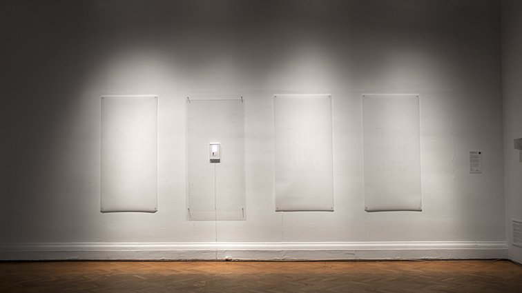

MÓNICA BATE
MÓNICA BATE
Anatomía para el movimiento: línea 2
CIRCUITO SOBRE PAPEL CON MICROCONTROLADOR ATTINY85 Y NITINOL DE 0,006" Y DOS LÁMINAS DE ILUSTRACIÓN IMPRESAS INSPIRADAS EN LOS MOVIMIENTOS DEL NITINOL. DIMENSIONES VARIABLES.

Anatomía para el movimiento:línea 2 es un proceso que parte de la observación de un material reactivo al pulso eléctrico: una aleación de níquel y titanio que en presencia de la electricidad, se retuerce y contrae. El estudio del ritmo, es el que tienta a registrar el movimiento de un modo análogo al que se aplica en la anatomía muscular de cuerpos vivos, imitando incluso ciertos códigos visuales de la ilustración científica. En este aspecto de la obra, la ilustración de aquello que está en movimiento, dispuesta de manera secuencial, se vuelve un lenguaje relacionado al cuerpo animado, así como a la traducción de tiempo a espacio que proponen las ilustraciones.
Mónica Bate (Chile, 1978). Su trabajo ha sido expuesto en Chile y el extranjero destacando los proyectos Tape Drawings, IS3, el colectivo Strings y The Life of Crystals entre otros. Se ha especializado en Nuevos Medios y Sonido estudiando en el Postítulo de Arte y Nuevos Medios (UCH), en Harvestworks y en ITP de la NYU. Forma parte del equipo Anilla Cultural del Museo de Arte Contemporáneo y es co-fundadora del directorio de Laboratorio Flores, espacio interdisciplinar científico-artístico.
www.etab.cl/monica-bate/